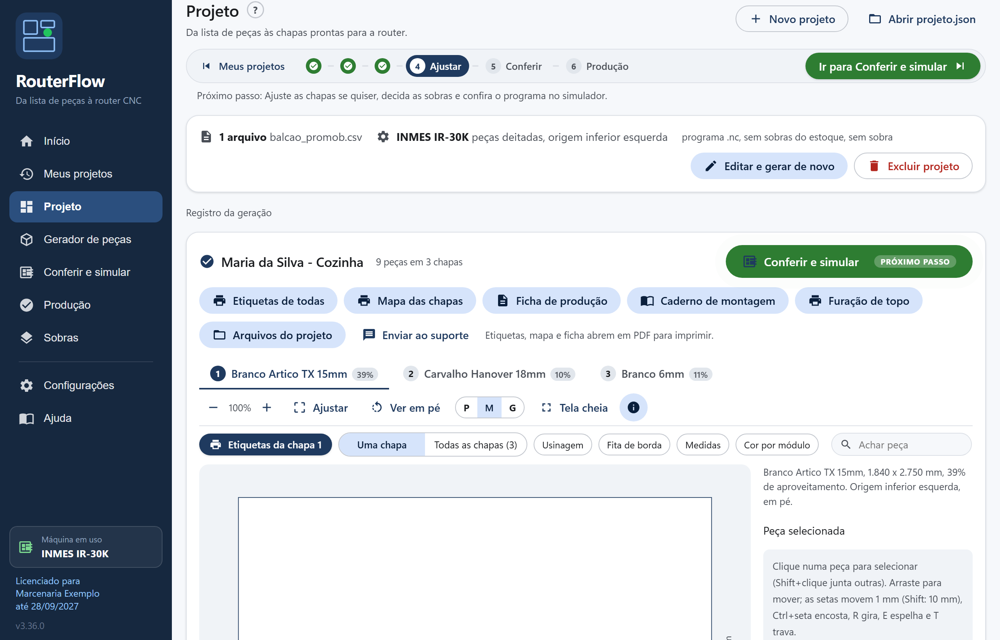
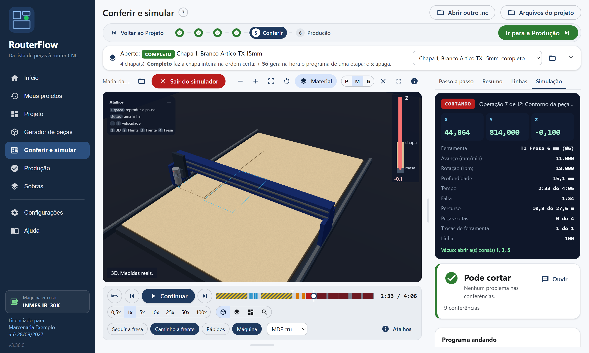
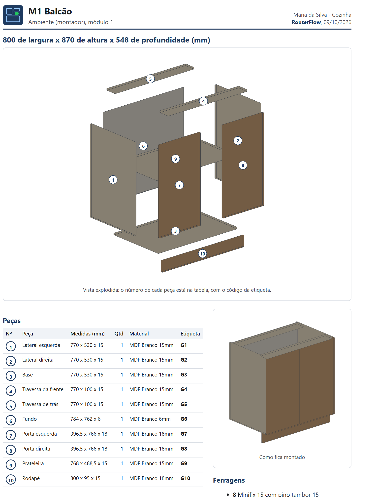
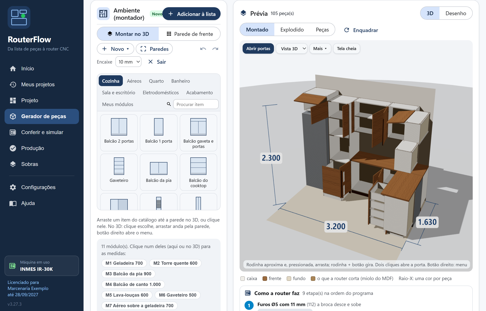
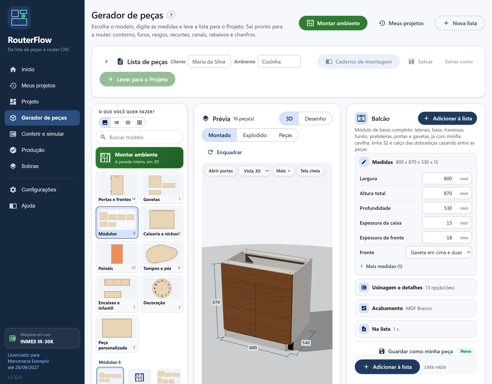
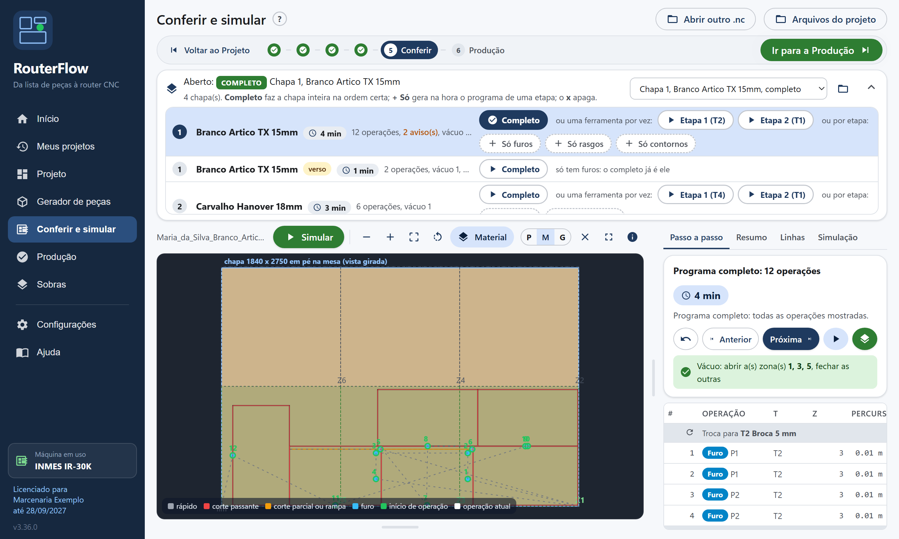
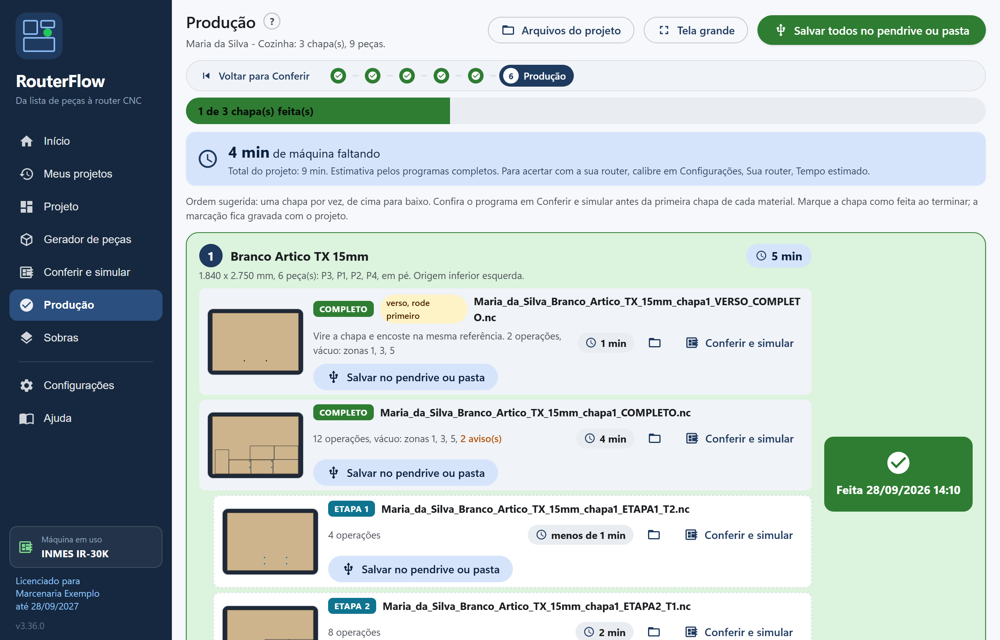
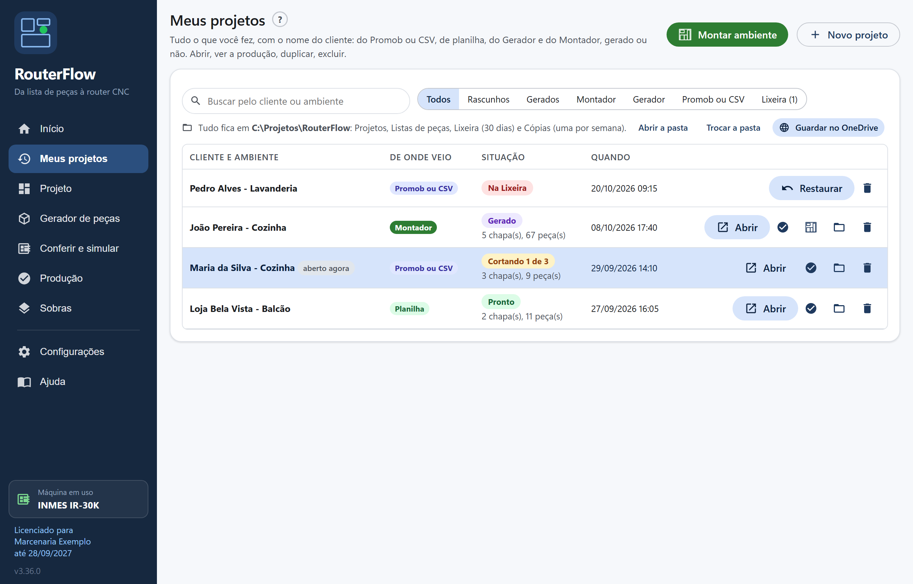
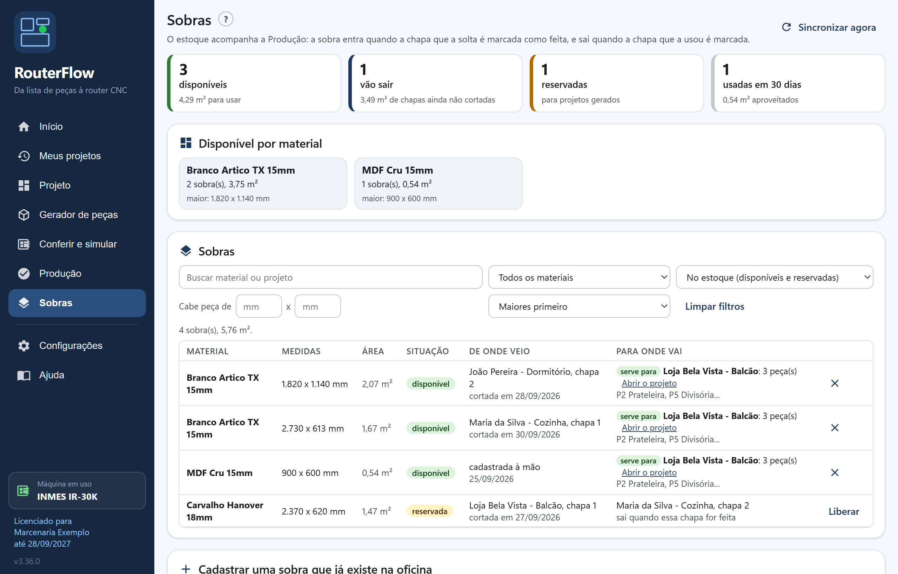

Para marcenarias com router CNC
Da lista de peças à router. Sem digitar peça, sem plugin, sem CAM.
Exporte a lista do seu software de projeto, ou crie as peças e o ambiente aqui mesmo. O RouterFlow monta as chapas, gera o programa pronto para a sua router, confere no simulador e imprime as etiquetas. Tudo com o nome do cliente, em minutos.
Mande o CSV de um projeto seu pelo WhatsApp e receba as chapas e os programas prontos. Windows 10 ou 11.

Veja funcionando
Cada tela do RouterFlow explicada em poucos minutos, com um projeto de verdade: da lista de peças ao programa da router.
Em menos de um minuto
 0:36Veja o corte antes de cortar
0:36Veja o corte antes de cortar 0:40Porta com cava em três cliques
0:40Porta com cava em três cliques 0:30A fresa invertida não bate na peça do lado
0:30A fresa invertida não bate na peça do lado 0:28Etiqueta pronta para cada peça
0:28Etiqueta pronta para cada peça 0:24A sobra virou estoque
0:24A sobra virou estoque 0:22Todas as chapas numa tela
0:22Todas as chapas numa telaTodos os vídeos no canal youtube.com/@routerflow.
Entre o projeto pronto e a chapa cortada, alguém digita tudo de novo
A router não lê o projeto do seu software de móveis. É nessa passagem que se perde tempo, chapa e dinheiro. O RouterFlow faz a passagem inteira.
Hoje, sem o RouterFlow
- Alguém digita peça por peça no CAM, e uma medida errada vira chapa perdida.
- Plugin pago para exportar o DXF, outro para a furação, com mensalidade e internet obrigatória.
- Encaixe feito no olho: sobra chapa e sobra retalho que ninguém acha depois.
- Etiqueta à mão ou em planilha, e peça trocada na hora de montar.
- Ninguém sabe quanto tempo de máquina o projeto vai levar.
Com o RouterFlow
- A lista que o software de projeto já exporta de graça vira chapa e programa. Ninguém digita nada.
- Um programa só, sem plugin e sem CAM. Quem usa o Aspire continua usando, pelo DXF.
- Encaixe automático, e as sobras do estoque entram antes de abrir chapa inteira.
- Etiqueta de cada peça com cliente, ambiente, medidas e fitas de borda.
- Tempo estimado de cada chapa e o simulador dizendo se pode cortar.
Para quem é
Marcenarias e fábricas de móveis planejados com router CNC. MDF, MDP e compensado, com ou sem mesa de vácuo.
O que substitui
O plugin de exportação em DXF, o CAM, o gerador de peças, a loja de arquivos prontos e a planilha de etiquetas.
O que você precisa
Um computador com Windows e o CSV do plano de corte, uma planilha do Excel ou só as medidas: o Gerador faz o resto.
Configure a máquina uma vez. Depois, todo projeto é assim
Quatro passos, sem sair do programa.
- 1
Traga a lista de peças
O CSV do plano de corte, uma planilha do Excel, ou as peças criadas no Gerador e no Montador de ambiente. Arraste para o RouterFlow.
- 2
As chapas saem montadas
Por material e espessura, com o melhor encaixe e as sobras do estoque. Quer mudar? Arraste a peça e pronto.
- 3
Confira e mande para a router
Veja a fresa cortando em 3D, com o tempo e o veredito: pode cortar, confira ou não corte. Salve no pendrive ou mande pela rede.
- 4
Imprima e corte
Etiquetas, mapa das chapas, ficha de produção e caderno de montagem. Na máquina, marque cada chapa feita e veja quanto falta.

Quer ver cada tela e cada botão? O manual completo mostra tudo, do primeiro acesso à chapa cortada.
De cada projeto, tudo com o nome do cliente
Pasta, arquivos e impressos seguem o mesmo padrão, lido do próprio projeto.
Programas da router (.nc)
Um por chapa, com furos, rasgos e contornos em sequência, rampa de entrada, zonas de vácuo e as curvas em arco no formato do seu comando. Verso espelhado quando a peça tem usinagem atrás.
DXF por material
Todas as chapas do material num arquivo só, na orientação e na origem da sua mesa. Layers com nomes fixos para quem usa o Aspire ou outro CAM.
Etiquetas das peças
Cliente, ambiente, módulo, peça, medidas, fitas de borda e o desenho da peça. No tamanho do seu rolo de etiquetas ou oito por folha A4.
Mapa das chapas
Uma folha por chapa com as peças numeradas, medidas, sentido do veio e a sobra que fica. Fica ao lado da máquina.
Ficha de produção
Materiais, chapas, aproveitamento, metros de fita por cor, ferragens, arquivos gerados e os avisos a conferir antes de cortar.
Caderno de montagem
Para quem monta na obra: cada móvel explodido com as peças numeradas pelo código da etiqueta, as ferragens e o passo a passo.



Feito dentro da oficina, na ordem do menu do programa
Meus projetos, Projeto, Gerador de peças, Conferir e simular, Produção e Sobras. Cada um faz uma parte do caminho até a router.
Meus projetos
Tudo o que a marcenaria faz num lugar só, com o nome do cliente e a situação: rascunho, gerado, cortando, pronto. Pasta única, Lixeira de 30 dias e cópia semanal.
Chapa bem aproveitada
Doze estratégias por material, fica a que gasta menos chapa. Respeita veio, folga e defeitos, usa as sobras do estoque e encaixa peça em L, curva ou letra pela forma.
Qualquer lista de peças
O CSV do software de projeto, uma planilha do Excel ou a lista de outro programa: você diz qual coluna é qual uma vez, e o RouterFlow lembra.
Editor de chapas
Arraste, gire, espelhe, trave a peça, encoste e alinhe várias de uma vez, marque defeitos e refaça o encaixe só de uma chapa. Regrava DXF, programas, etiquetas e mapa juntos.
Gerador de peças
68 modelos pelas medidas, com a foto de cada um: portas com cava, provençal e vidro, gaveta pelo vão, tampo com cuba, painéis ripados e 3D, mesas, bancos, estantes e a peça personalizada desenhada à mão ou lida de uma foto.
Montador de ambiente
A cozinha, o banheiro ou o quarto inteiro: paredes reta, em L ou em U e um catálogo de balcões, aéreos, torres e armários arrastados no 3D. Toda peça pode ser editada, e o caderno de montagem sai junto.
Projetos prontos
88 produtos que não existem como modelo: berço e mini berço de balanço, mesa de centro Órbita, estante elíptica, labirinto de bolinha, blocos de equilíbrio, porta-vinho, adega, luminária, porta-retrato, sapateira, jardim vertical, casa de boneca, cabideiro de pé, casinha de cachorro e mais, com a foto em 3D. Escolha a espessura da sua chapa e a peça entra no projeto com programa e caderno. Dentro da licença, e entram no Montador.
Produção no celular
O operador abre a lista das chapas no celular ou no tablet pelo Wi-Fi da oficina, com um QR code: vê a chapa, o programa e o tempo, e marca a chapa feita no pé da máquina. Sem internet e sem instalar nada.
Orçamento em PDF
O valor para o cliente sai do próprio projeto: chapas, fita, ferragens e o tempo de máquina dos programas, com a mão de obra, a montagem e as condições. Os preços ficam guardados para o próximo.
Programa da router sem CAM
Furos, rasgos, recortes, rebaixos, chanfros, canais, relevo 3D e V-carve, com contorno pelo raio da fresa, rampa, peças pequenas primeiro e pele fina. Curvas em arco G2/G3 no formato do seu comando.
Conferir e simular
A fresa corta a chapa em 3D na tela, de 1x a 100x, com o programa andando junto. No fim, o veredito: pode cortar, confira ou não corte, com o ponto exato do problema.
Produção
As chapas na ordem de corte, a miniatura e o tempo de cada programa, pendrive conferido byte a byte, pasta de rede ou FTP, e a marcação de chapa feita.
Sobras
A router corta cada retalho alinhado e sai a etiqueta. A sobra entra no estoque quando a chapa é marcada como feita e é usada antes de abrir chapa nova.
A sua router, do seu jeito
Perfis de máquina com mesa, vácuo, ferramentas e pós-processador. Escolha o comando (DDCS Expert, Syntec, Weihong, Mach3, GRBL, Fanuc, MASSO, Centroid) ou importe o .pp do Aspire, e rode a prova no ar em dois minutos.






Um preço só, com tudo dentro
O que hoje se compra separado vem numa licença só: projeto em 3D, gerador de peças, arquivos prontos, CAM, otimizador de corte e controle da produção. Sem adesão, sem mensalidade e sem módulo extra.
2 computadores, tudo incluído
R$ 2.899/ano
- PIX à vista com 10% de desconto: R$ 2.609,10
- Cartão de crédito em até 12x, com o acréscimo da operadora
- 2 computadores da mesma empresa: o do projeto e o da máquina
- Computador a mais na mesma empresa: R$ 1.449,50 por ano (PIX R$ 1.304,55)
- Todas as atualizações do ano e suporte pelo WhatsApp incluídos
Dá R$ 241,58 por mês, menos de R$ 8 por dia. Uma cobrança só por ano.
Comprando cada parte separada
Valores de referência dos produtos de cada categoria no Brasil, em 2026, por ano de uso. Sem o nome das empresas.
| Software de projeto de móveis com módulos e 3DAssinatura mensal, por computador | R$ 3.600 por ano |
| Gerador de peças e DXF pelas medidasPlugin do CAM: adesão e renovação anual | R$ 1.400 + R$ 400 por ano |
| Arquivos prontos de móveis, comprados um a umMesa, banco, estante, caixa, porta-chaves: 13 projetos | cerca de R$ 700 |
| CAM para montar as chapas e gerar o programaLicença do programa mais o pós-processador | cerca de R$ 11.000 |
| Otimizador de plano de cortePara o encaixe e as sobras | mais de R$ 1.000 |
| Etiquetas, mapa e controle da produçãoPlanilha ou sistema à parte | R$ 1.800 por ano |
| Juntando tudo, no primeiro ano | mais de R$ 19.000 |
| Nos anos seguintes, só as renovaçõesSem contar atualização de versão e novos arquivos | mais de R$ 5.800 por ano |
Se paga em menos de três meses
Numa oficina que corta 50 chapas por mês a R$ 280:
| Aproveitamento da chapa (3% a mais) | R$ 5.040 |
| Tempo de programação (8 h por mês) | R$ 3.840 |
| Retrabalho evitado (meia chapa por mês) | R$ 1.920 |
| Retorno por ano | R$ 10.800 |
Custa pouco por chapa
São R$ 4,83 por chapa cortada nessa oficina. Pouco mais de dez chapas de MDF pagam o ano inteiro, e só o aproveitamento a mais devolve dezoito.
Perguntas que chegam no WhatsApp
Se a sua não estiver aqui, chame o suporte.
O RouterFlow funciona com o CSV do Promob?
Sim. Ele lê o CSV do plano de corte exportado pelo Promob, com o contorno de cada peça, as fitas de borda, os furos, os rasgos, o cliente e o ambiente. Não precisa de plugin pago nem de internet para exportar. Também aceita uma lista simples de peças de qualquer outro software, do Excel ou do Corte Certo.
Preciso do Aspire ou de outro CAM?
Não. O RouterFlow gera o programa .nc de cada chapa direto para a router, com furos, rasgos e contornos. Quem prefere continuar no Aspire ou em outro CAM usa o DXF por material, que sai com as layers no padrão de sempre.
Funciona na minha router?
O programa sai pelo pós-processador da sua máquina, com as curvas em arco no formato do seu comando: DDCS Expert (INMES, Mach CNC), Syntec, Weihong, Mach3, GRBL, LinuxCNC, Fanuc, MASSO e Centroid. Dá para importar o arquivo .pp do Aspire que você já usa, e a prova no ar mostra em dois minutos, sem chapa, como a máquina se comporta nas curvas.
Não tenho software de projeto. Serve para mim?
Serve. O Gerador de peças cria as peças pelas medidas (68 modelos) e o Montador monta a cozinha, o banheiro ou o quarto inteiro no 3D. Os projetos prontos da vitrine já vêm com tudo. De lá, as peças vão para as chapas e para a router como qualquer outra.
Precisa de internet para usar?
Não para trabalhar. A licença é confirmada pela internet de vez em quando e as atualizações são baixadas pelo próprio programa, mas gerar chapas, DXF e programas funciona sem conexão.
Quanto custa?
R$ 2.899 por ano, com 2 computadores da mesma empresa, uma cobrança só por ano. No PIX à vista tem 10% de desconto, R$ 2.609,10. No cartão de crédito, em até 12x com o acréscimo da operadora do cartão. Cada computador a mais na mesma empresa custa R$ 1.449,50 por ano. Atualizações e suporte pelo WhatsApp incluídos.
Quantos computadores posso usar?
A licença vale para 2 computadores da mesma empresa, normalmente o do projeto e o que fica do lado da máquina. Cada computador a mais na mesma empresa custa R$ 1.449,50 por ano (R$ 1.304,55 no PIX). Cada computador recebe a própria chave, com o CNPJ da empresa.
Tem mensalidade ou adesão?
Não. É uma cobrança só por ano, com todas as atualizações e o suporte incluídos. Não tem taxa de adesão, módulo extra nem função que se paga à parte.
Como ativo a licença?
Instale, abra Ajuda, Licença, e copie o código da máquina. Envie pelo WhatsApp com a razão social, o CNPJ, o e-mail e o telefone da empresa. Você recebe a chave, cola e clica em Ativar. Sem cadastro.
Como peço ajuda?
Dentro do programa, em Ajuda: o manual com busca e a aba Suporte, com o WhatsApp do Consultor RouterFlow e o botão que manda o projeto aberto para ele olhar do mesmo jeito que você vê. Atendimento de segunda a sexta, das 8h às 18h, com resposta em até 1 dia útil.
Quais os requisitos?
Windows 10 ou 11, 64 bits. O instalador cuida do componente WebView2 do Windows, se faltar. Funciona no computador do projeto e no computador da máquina.
Sempre melhorando
O que chegou em cada atualização, da mais nova para a mais antiga. Quem já tem o RouterFlow recebe tudo isso sozinho.
Versão 3.50.0Produção no celular e orçamento29/10/2026
- Produção no celular ou tablet da oficina pelo Wi-Fi: o operador vê a chapa e marca feita no pé da máquina.
- Orçamento para o cliente em PDF, com o tempo de máquina dos programas e os preços guardados.
- Peça personalizada: a curva livre continua editável arrastando os nós, e a fita fica ao combinar formas.
Versão 3.49.0Peça personalizada: desenhe e combine formas29/10/2026
- Desenhe a peça com retas, arcos por 3 pontos e curvas livres, com a grade no fundo.
- Formas prontas (estrela, coração, gota, nuvem, meia-lua, cápsula e mais) e Combinar: somar, recortar ou ficar com o cruzamento.
- Contorno paralelo: o friso acompanha a borda da peça na distância que você quiser.
Versão 3.48.0Berço de balanço e canto curvo de um lado só29/10/2026
- Vitrine com o berço de balanço e o mini berço, de moisés: cabeceiras em arco com alça, grades no vão da norma e estrado ventilado.
- Canto curvo: os cortes além da curva podem ir só para a esquerda ou só para a direita.
- No 3D em tela cheia, o botão Fechar a tela cheia fica à vista no canto.
A última versão, pronta para instalar
O instalador é o mesmo para instalar do zero e para atualizar. Depois, o programa se atualiza sozinho.
Procurando a versão mais recente...
Baixar o instalador (.exe)Windows 10 ou 11, 64 bits. O instalador cuida do componente WebView2 do Windows, se faltar.
Como instalar e ativar
- Baixe e execute o instalador. Se o Windows mostrar "O Windows protegeu o computador", clique em "Mais informações" e depois em "Executar assim mesmo". O aviso aparece para qualquer programa novo que ainda não tem reputação no Windows.
- Abra o RouterFlow, vá em Ajuda, Licença, e copie o código da máquina.
- Envie o código pelo WhatsApp com a razão social, o CNPJ, o e-mail e o telefone da empresa. O botão da própria tela já monta a mensagem.
- Cole a chave recebida e clique em Ativar. Sem cadastro. Internet só de vez em quando, para confirmar a licença.
Quer ver com um projeto seu?
Mande o CSV de um projeto pelo WhatsApp e receba as chapas, os programas e as etiquetas prontos. O Consultor RouterFlow também ajuda a configurar a sua máquina.
Atendimento de segunda a sexta, das 8h às 18h, com resposta em até 1 dia útil; máquina parada, chame no WhatsApp. A chave costuma sair em poucos minutos depois da confirmação do pagamento.